Walkthrough: CI/CD With Jenkins
Follow along with the instructor as we configure Jenkins.
Our Continuous Integration & Delivery Goals
After a branch/story is merged into our master branch. We want…
- Make sure the master branch still compiles after the merge
- Make sure the tests still pass
- Create a
.jar file
- Deliver the
.jar file to expedite deployment
To accomplish these goals we will need to…
- Install & Configure Jenkins
- Create a Jenkins user
- Install Plugin
- Create Empty Projects
- Build Todo API Compile
- Link Projects Together
- Configure Todo API Compile
- Configure Todo API Test
- Configure Todo API CreateJar
- Configure Todo API Deliver
Install Plugin - Parameterized Trigger
Before we get started in creating our Jenkins Projects we are going to install the Parameterized Trigger plugin. This plugin will allow us to link Jenkins Projects together (trigger), and have all the projects share the same workspace (parameters).
On the left hand side of the Jenkins Home page you should see a button labeled Manage Jenkins click it now. You should see the Manage Jenkins page that looks something like this:
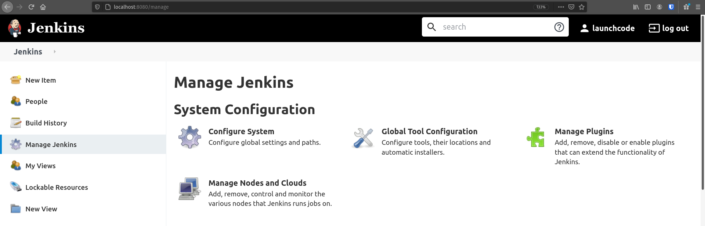
Click the Manage Plugins button (it looks like a loose puzzle piece).
That should take you to this page:
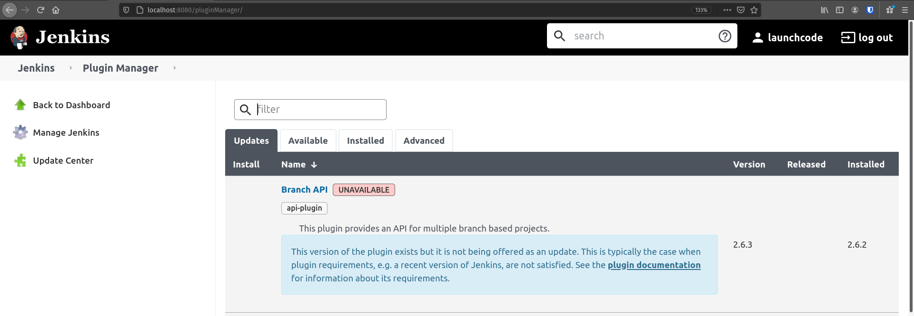
Select the Available tab and then use the Filter box to search for Parameterized Trigger which should look like this:
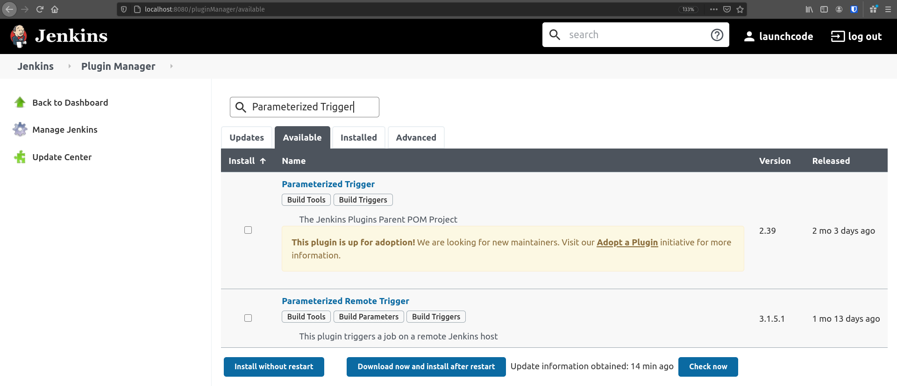
Select the checkbox for this plugin and click the Install without restart button. This will take you to a new page and may take a couple of minutes to completely install.
After the plugin is installed completely return to the Jenkins Home Page, by clicking the Jenkins Icon in the top left of your browser.
Create Empty Projects
We need to create 4 projects in Jenkins, for now we just want to name them and save them.
The projects we want to create are:
- Todo API Compile
- Todo API Test
- Todo API CreateJar
- Todo API Deliver
For each project:
- Click New Item
- Enter in the Project Name
- Click Freestyle Project
- Click OK
- On the configure project screen click Save
Following is a walkthrough for the first project Todo API Compile. You will need to do this four times for all of the projects we need for this pipeline.
From the Jenkins Homepage click New Item:
This will take you to a page like this:
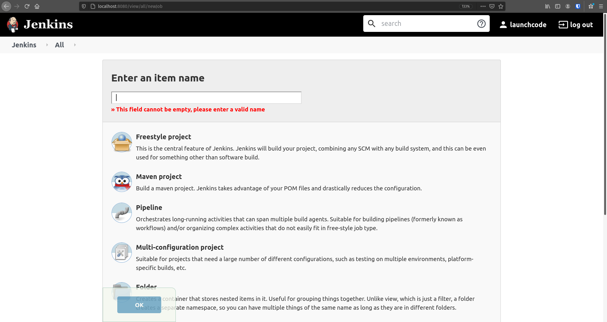
Put in the Item name: Todo API Compile, click Freestyle project, and then click the OK button. This should take you to the Configure Project screen:
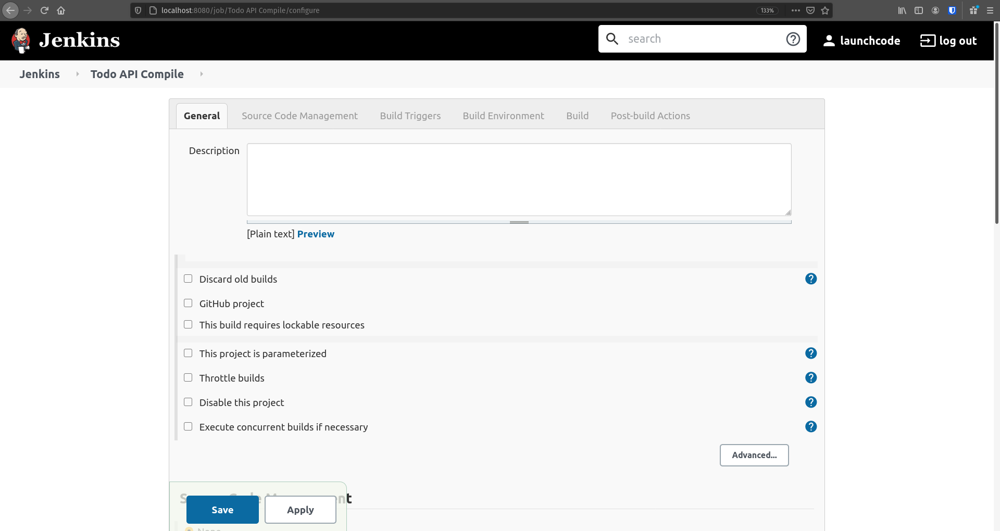
For now we aren’t going to configure anything, so just click the Save button.
Repeat the Create new Item steps for all four of our projects: Todo API Compile, Todo API Test, Todo API CreateJar, and Todo API Deliver and then return to the Jenkins Homepage which should look like this:
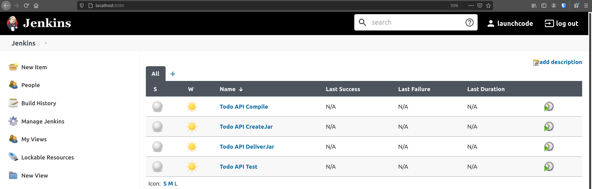
Build Todo API Compile
To familiarize ourselves with how Jenkins works let’s try building one of our projects. We haven’t added any actions to our project yet, but Jenkins will still run it for us. From your Jenkins dashboard click on your Todo API Compile project. This takes you to the homepage for this specific project and looks like:
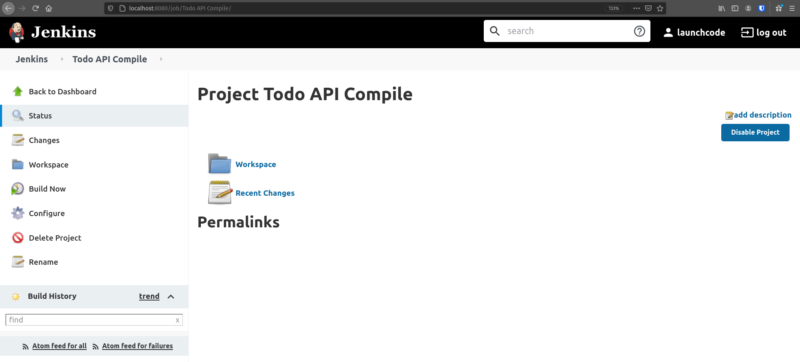
From here click on the Build Now button on the left-hand menu. This will schedule a build that should start immediately. You should see that your build history has changed and now has one build in it like the following image:
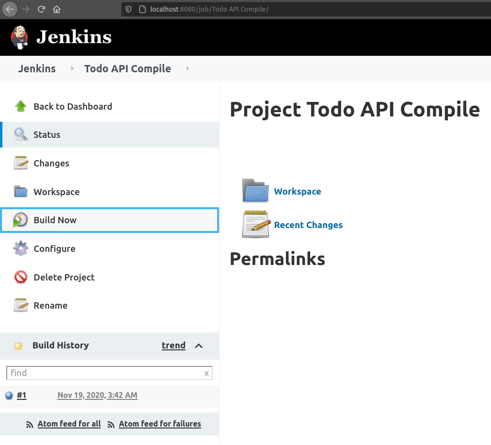
Let’s click on that build (it should be a link) and look at the page for this specific build:
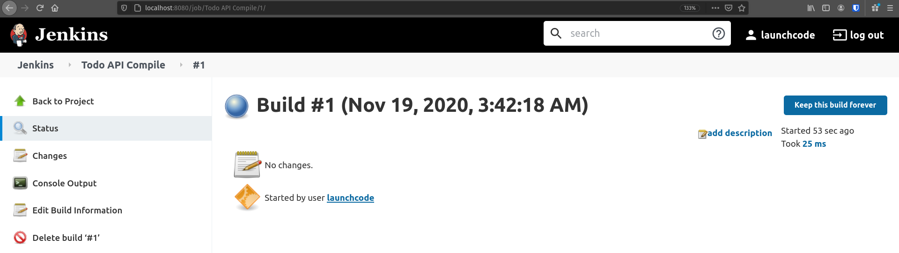
From here click on Console Output so we can see what came out of the terminal when this build was run in our Jenkins Container:
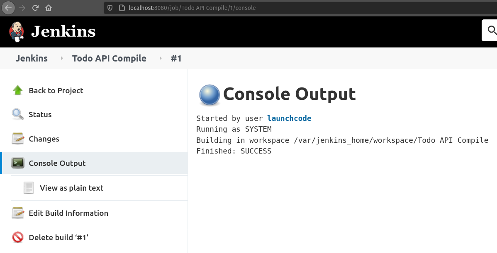
The Console Output is pretty sparse, which makes sense, we haven’t told Jenkins to do anything for us in this build yet! The output is just letting us know where this project’s workspace is, and this build was successful. The workspace is where all of the files for this project would live. Any built artifacts, or .jar files, test results, etc.
However, we don’t want to manually trigger all of these individual projects. In the next section we will add some configurations to our existing projects so they will automatically build when a previous project was successful.
Link Projects Together
We know the order of our projects:
- Todo API Compile
- Todo API Test
- Todo API CreateJar
- Todo API Deliver
So let’s use the parameterized trigger plugin we installed earlier to run our projects in this order. Navigate to the Todo API Compile homepage and click Configure which should take you back to the project configuration screen:
From here we want to add a Post build Action so click the tab or scroll towards the bottom of this page until you see:
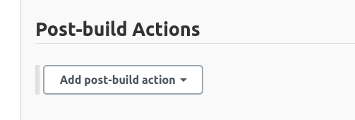
Click the drop-down menu and select Trigger parameterized build on other projects:
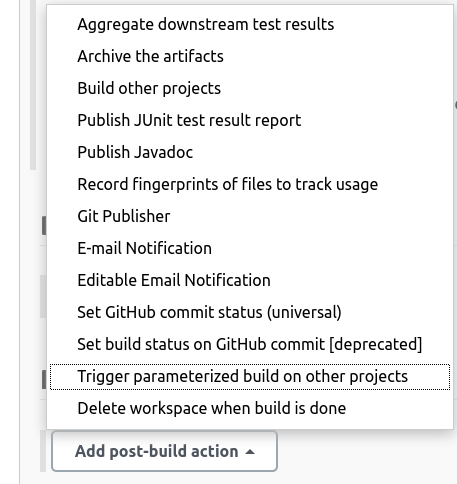
This will create a new section in which you will need to enter the next project to build Todo API Test, and then you will have to add two parameters using the Add Parameters drop-down box: build on the same node and Predefined parameters. In the Predefined parameters section add: TODO_WORKSPACE=${WORKSPACE} and click the Save button.
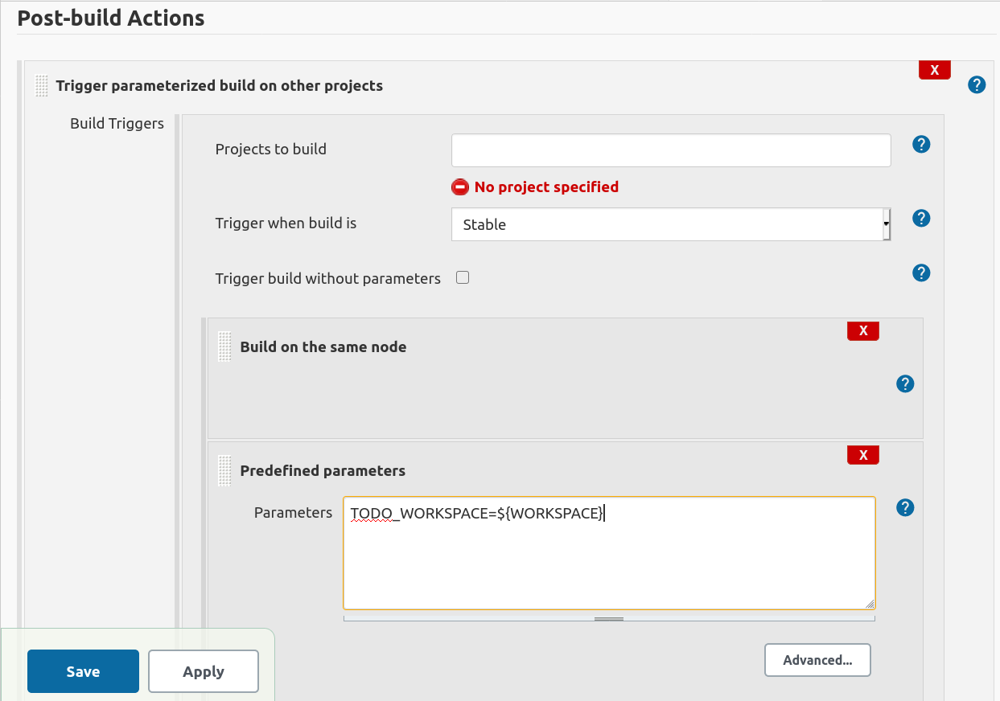
We have told Jenkins that when the Todo API Compile project is successful that it should automatically schedule and run Todo API Test. We have instructed Jenkins to run the next project on the same node, and that we will be passing it one parameter. The parameter key is TODO_WORKSPACE and the value is ${WORKSPACE}. This is how we share the same workspace between the two projects.
Our workspace is what contains our built artifacts, and all of the files of our project. We want this to be used by all projects so that we don’t have to keep pulling these files into each individual project.
Now we will need to configure our Todo API Test project to receive this parameter, and to use the workspace that is being passed in. Open the Todo API Test project, and click configure:

In the General section we need to select the This project is parameterized checkbox and we need to add a new String Parameter from the Add Parameter drop-down menu. In the String Parameter section add TODO_WORKSPACE to the Name field. This is our way of letting this project know the previous project will be passing in one parameter, and we should name it TODO_WORKSPACE.
We now need to configure a custom workspace for this project. At the bottom of the General section you should see a button labeled Advanced click that button to see more options including Use custom workspace. Check the Use custom workspace checkbox and enter ${TODO_WORKSPACE} we are using the parameter passed in from the previous section here:
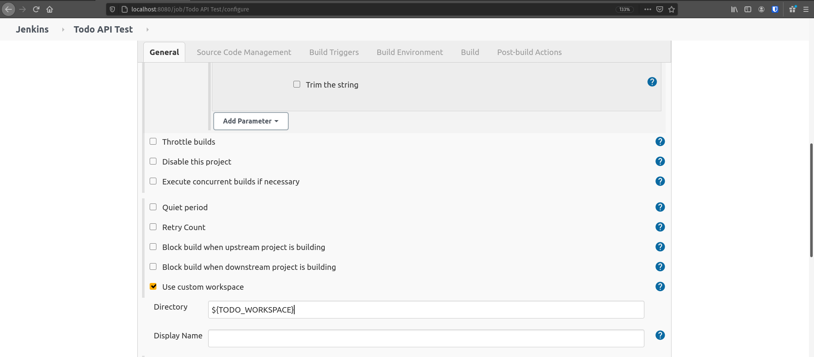
Double check that you have selected This project is parameterized, you added the new String Parameter that represents our workspace, and added the Use custom workspace and set it’s directory to the parameter that was passed in and click Save.
Let’s try it out to make sure it worked. Navigate to your Todo API Compile project, and click Build now. When it’s completed it should automatically fire your next project Todo API Test.
Now we will need to add the conditions to continue passing the workspace and triggering the next builds. Using the steps we followed above you will need to:
- Add a post build action to
Todo API Test
- Add parameters, and custom workspace to
Todo API CreateJar
- Add a post build action to
Todo API CreateJar
- Add parameters, and custom workspace to
Todo API Deliver
After making the additional amendments to Todo API Test, Todo API CreateJar, and Todo API Deliver build Todo API Compile and watch Jenkins run through all four of our projects. Your dashboard should look like this:
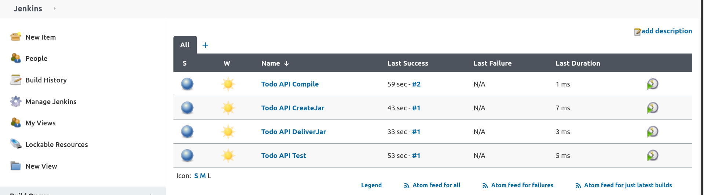
Now that all of our projects are in an automated pipeline let’s start adding some actual build actions to our projects!
Configure Todo API Compile
Our first project is to compile our code. In order to do this we will first need to get our code into the hands of Jenkins. We will do this within our first project Todo API Compile. Go to the Configure project screen for Todo API Compile and select the Source Code Management header, or scroll to that section:
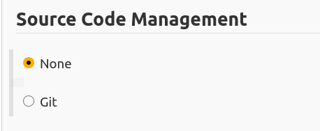
Select Git. From here you will need to provide the URL to your git repository: https://gitlab.com/LaunchCodeTraining/todo-tasks-api-solution
And the branch to pull from this repository: */master.
It should looks something like this:
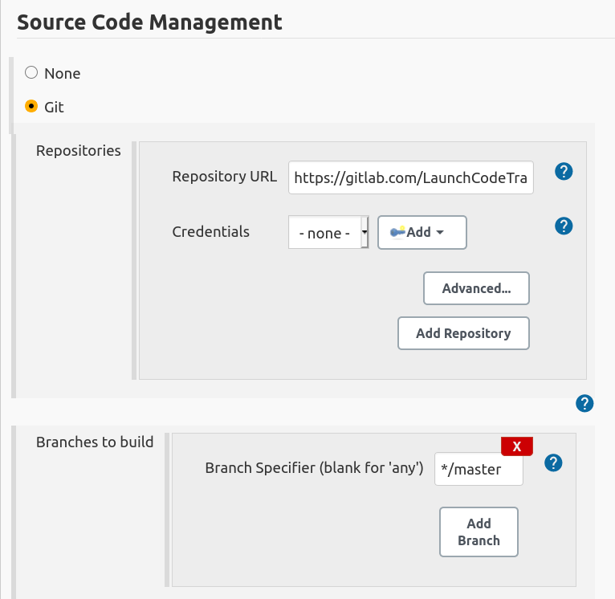
Note
If you are attempting to pull from a private git repository you will have to give Jenkins the proper credentials. In GitLab the easiest way is to create a Deploy Token and paste the token information into the credentials section of the repository. You can find Deploy Tokens under Settings->Repository from the GitLab web interface.
This will give this Jenkins project the ability to pull from your Git repository and to store the files it pulls into it’s workspace. Let’s try it out!
Click Save, and then build now.
After the build finishes click on Workspace. You should notice now that it pulled all your files from Git:
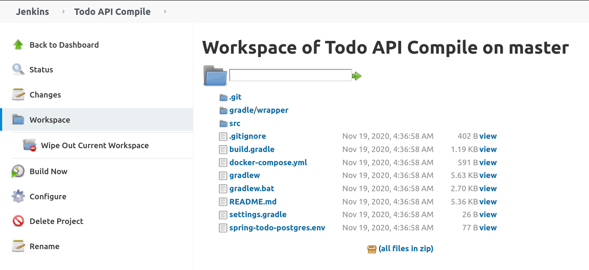
Tip
You may also want to checkout the Console Output for this specific build, it is showing us the output from the actual commands run by Jenkins. You will probably see some information about Git connecting to and pulling down files from the referenced Git URL.
Now that we have the files from GitLab we can compile them! We will do that with a Gradle Task. Configure Todo API Compile one last time. This time navigate to the Build section and Add a build step which Invoke Gradle script:
We want to select Use Gradle Wrapper, and then we need to include the gradle tasks we want to run. Let’s run clean and compileJava.
Now the Jenkins project Todo API Compile will pull down our code from GitLab, run the Gradle tasks clean and compileJava and if all three of those things are successful it will trigger the next Jenkins project Todo API Test.
Run this project again and make sure it is still successful letting us know the code that was pulled from GitLab was compiled successfully. We can verify this by looking at the console output for this most recent build:
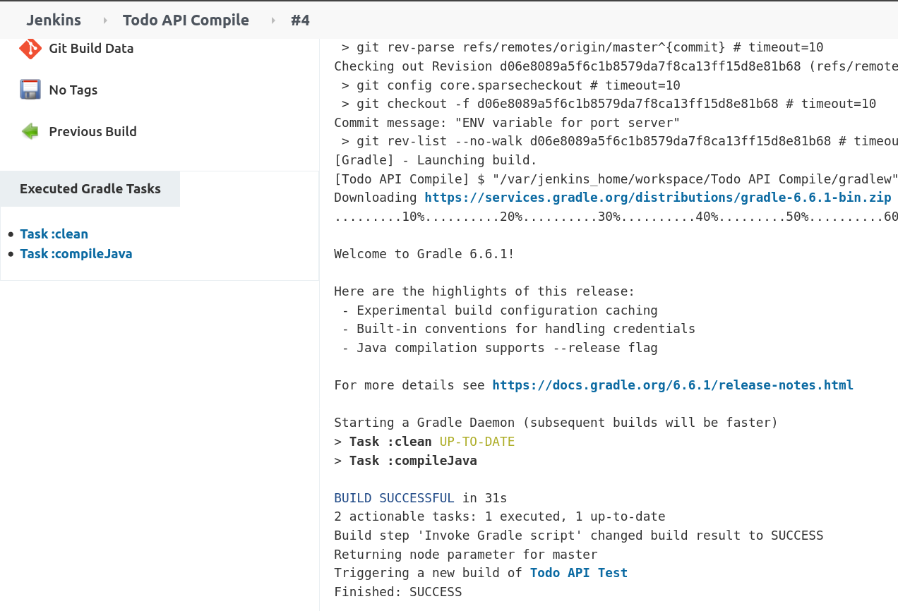
Tip
After running Build Now again checkout the Console Output of this Jenkins project Build. We now see some familiar Gradle messages about running tasks and if they were successful or not. The Console Output is a very beneficial tool for troubleshooting your Jenkins projects.
Continuous Integration?
As our Jenkins pipeline stands right now it’s not automatic. We have to login to Jenkins and click the run build action on our Todo API Compile task. So although we have a Jenkins pipe that does all the work up to Delivery for us, we still hav to manually engage with it.
You could say this pipeline isn’t continuously integrated because it requires human interaction. We want the Todo API Compile project to engage automatically when a new change is pushed to master.
What is necessary for our Jenkins Pipeline to automatically fire? Communication.
There are essentially two options:
- Our Jenkins Pipeline needs to check the GitLab repository for changes at some interval
- The GitLab repository needs to send a notification to our Jenkins Pipeline after a change has been made
Currently our Jenkins Pipeline is running in a development environment because it’s tied to our local development machine. GitLab would need to make a web request to Jenkins in order to trigger a build action.
To configure this would take a bunch of steps in your own personal home LAN. It would also probably break some rules in the contract you have with your Internet Service Provider. So we can’t have GitLab contact our Jenkins pipeline because it is running on our machine.
However, we can configure our Jenkins Pipeline to check our GitLab repo every so often for changes. If it detects changes it can kick off the Todo API Compile task automatically.
Add Poll SCM to Todo API Compile
Navigate to the Todo API Compile project and click Configure. Scroll down to Build Triggers and check Poll SCM:
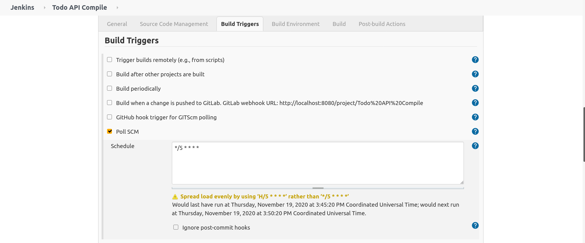
We will be adding a `Cron job <https://www.man7.org/linux/man-pages/man5/crontab.5.html`_ this is a linux tool for scheduling specific tasks. In this case we will be scheduling this Poll SCM to check our GitLab repo every five minutes.
After entering in the valid crontab syntax: */5 * * * * for run every five minutes click save.
Now check the Git Polling Log tab of our Todo API Compile project:
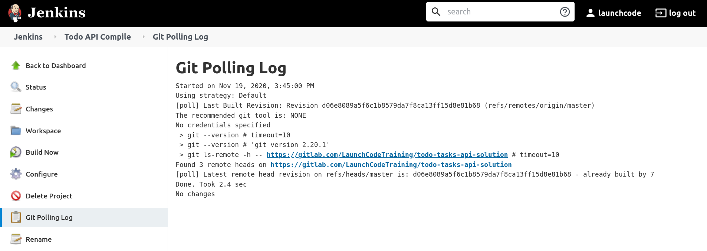
You may have to wait a couple of minutes but you will eventually see output like the line above. It checked the main branch of our GitLab repo and didn’t detect any changes, so no task was fired.
Your instructor will make a change to the master branch and after five minutes you should see an update to this tab:

Jenkins detected a change to the master branch and automatically triggered the Todo API Compile project. Which succeed and propagated through our pipeline of linked projects.
You can see that all of the tasks ran by looking at
Next Steps: Bonus
Deploy Jenkins
Right now our Jenkins Pipeline is using SCM Polling to detect changes, however this is pretty inefficient because the Jenkins container must be running on your local machine to poll the GitLab repo, and it does so every five minutes. Not only is this wasteful, it’s a pipeline that shuts down anytime your machine shuts down or loses internet access.
The next step for this Pipeline would be to deploy it. You could easily create a new VPC, with a public subnet and one EC2 for Jenkins. You could then move Jenkins over to that EC2 and re-configure your pipeline.
Use the GitLab Plugin to Trigger Builds
You could then use the GitLab Plugin and configure a Build Trigger on a change to the master branch that would send a web-request to Jenkins! This is what would fire the Todo API Compile project and engage the pipeline.
Expanding the Functionality of the Jenkins Pipeline
With CI/CD the sky is the limit. Whatever regular tasks that need to be performed we can add to our Pipeline.
Right now Jenkins is only delivering one JAR file to the S3 bucket. What other files does our EC2 depend on?
- nginx.conf
- docker-compose.yml
- Systemd unit file
- possibly a docker env file
You could easily add a new task that would send these files to the S3 artifacts bucket as well, which would make your deployment even easier.
If you really wanted to get crazy with it you could add a bash script that can be ran that will remove the old JAR file, copy the new JAR file with the AWS CLI, stop the todo-app.service, start the todo-app.service which in essence is the remainder of our deployment steps.
You could add this bash script to your list of additional build artifacts and have our Pipeline push it to the S3 bucket.
Additional Bonus Tasks
Our Jenkins pipeline only takes us through Delivery, but doesn’t automatically Deploy our jar file. Looking into AWS Code PipeLine could help us take this pipe all the way to deployment…
- Other ideas to implement:
- Trigger
Todo API Compile on GitLab merge to your forked repo
- CI/CD for your Zika Client
- Try setting up a pipeline with the same stages using a different tool (GitLabCI, Travis, etc)